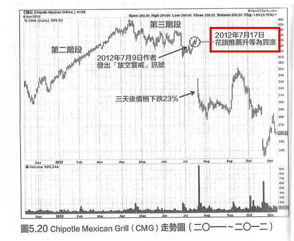

價格走勢才是終極真理
知道股王慘跌原因的請舉手
就我記憶所知，一年前大立光的地位就有如現在的臺積電，臺灣之光，世界無敵。但看下面的走勢圖，在2020~2021臺股狂飆的年代，許多股票漲了兩倍、三倍，這股王卻慘跌腰斬，知道原因的請舉手？意思就是，世界上有一種投資方法最厲害，就是「馬後炮」通常股價的漲跌，沒有人能預先知道其原因。
[0082_臺積電大立光比較]
[0081_大立光崩跌]
為什麼說一年前大立光的好的讚，絕對不輸現在的「護國神山」臺積電。如下報導：
股王崩跌出師表－－訂單多到要拿蹺
擷取檔來源: 「訂單太多了，不可能全部接！」大立光全年稅後EPS210元，再創歷史紀錄-風傳媒
「訂單太多了，不可能全部接！」大立光全年稅後EPS210元，再創歷史紀錄
2020-01-10 12:50
你應該知道的是：手機鏡頭業界的王者大立光宣佈，2019年稅後EPS高達210.69元、再次創下臺灣股市空前佳績；且去年公司毛利率達69％，只做最難的產品，讓對手一再敗下陣來，是大立光經營風格一大特色。
臺股股王大立光再造驚奇，2019年每股賺進210.69元，為臺股史上再添新頁；毛利率69%逼近7成，遠高於臺積電的50%上下，鎖定高端產品，專挑難的做，讓大立光寫下臺股傳奇。
大立光2019年受惠主力客戶蘋果iPhone 11系列新機晉升到3顆鏡頭，銷售優於預期，加上供應三星手機新機種數持續增加挹注，帶動營收及獲利同創新高。
5G時代訂單爆表 「接下來只挑難的做」
迎接5G手機問世，鏡頭數及規格提升，法人對大立光新廠最快要2023年底才能開出顯得相當「焦慮」，擔憂產能開不出來，成長動能來自何方。
「沒辦法就是沒辦法」大立光執行長林恩平說，2021年至2022年沒有新廠房可擴充產能，他說「以高階產品為優先，同時精進良率」；既然是高階就代表技術門檻高，產品價格也相對高。
林恩平這句話言下之意是，今年到2023年底這4年間，不再拚量，專挑難的做，透過單價的提升及良率的精進拉高產值及獲利表現。林恩平說，「如果產品組合及良率上努力都還是不夠的話，再考慮先租廠房」，似乎也透露，其實透過挑客戶、挑產品加上良率提升，還是有不小空間。
「以價制量」顯然是大立光接下來的主戰略。
觀察大立光歷年毛利率表現，從2011年至2013年間的40%以上，到2014年突破50%，2016年起進一步衝破60%並直接跳到67%，直到2019年連續4年都維持在67%至69%間的高水準，持續在光學領域精進，堆疊技術門檻鎖定高階產品，是大立光始終能引領風騷，獨佔鰲頭的關鍵。
搭上近10年智慧型手機產業高速成長列車，加上手機鏡頭規格及顆數不斷升級，大立光近幾年持續繳出亮眼成績，股價從2013年突破千元登上臺股股王後，股價更一路改寫臺股歷史新頁。
大立光靠著技術夠強、規模夠大、客戶群夠廣，加上不膨脹股本連續6年每股盈餘維持在百元之上，2019年更首度突破200元大關，不僅再為自己寫下歷史新頁，同時也為臺股史上再添新篇章，以傲人的成績穩居臺股股王寶座至今長達6年，是臺股史上最貴也是最長壽的股王。
宏觀多空愚痴妄
下面這則故事是我本人的親身經歷。我是如何被「史詩級軋空」的？下圖顯示我在2018年10月放空臺股(大盤10517)，那真是有如股神般的犀利，沒想到它跌了一千點以後就反彈，一直反彈到17572(2021/4/26)，反彈了8,253點(17572-9319)，簡直就是史詩級的空頭災難，當初不信邪以為：全球股市多頭建築在印鈔行情，根本就是泡沫，臺股歷史高點12,682根本不可能越過(這叫摸頭)，然後，史詩級軋空就發生了。
[0083_宏觀多空愚痴妄]
一言以蔽之，這種荒謬情形發生的原因只有一個，就是：「自以為是，不尊重市場。」別笑！許多投資高手教你的「越跌越買」比這個還要糟糕十倍，我至少看矛頭不對就縮手了。
一定要明瞭真正的股票走勢
以下摘自「傑西‧李佛摩之股市操盤術」
我相信所有股市大波段走勢的背後都有無法抗拒的力量在運作。成功的投機客必須要知道就只有這一件事了。一定要明瞭真正的股票走勢，並且按此瞭解採取行動。想要將世界大事或頭條新聞或所有經濟相關事件和股票市場的走勢連接起來是做不到的。主要的原因是股市總走在世界大事之前。股市不是根據眼前的情況在運作的，它反映的也不是眼前的狀況，它的運作基礎在於未來。股市的表現通常與顯而易見的常識與世界大事反其道而行，如果說它是有靈魂的東西，那麼它在大多數情況下是專門來愚弄大多數人的。行情之所為會那樣表現的真正原因到最後總是會一一浮現的。
所以，想要根據眼前的經濟消息或時事來預測市場走勢，諸如採購經理人報告、收支差額、消費者物價指數及失業人口數字、甚至是戰爭謠言，都是愚蠢的行為，因為市場早已把這些因素都列入考慮了。但這並不代表說，我藐視這些事實或不知道它們的存在，不是這樣的。我對所有的世界大事、政治事件和經濟事件都知之甚詳。但這些事實不是我可以拿來「預測」市場的事實。在市場走過之後，財經專家會把它們「合理化」成沒完沒了的種種後見之明。當一切塵埃落定後，歷史學家會把這些經濟、政治等世界大事重點解釋成造成市場之所以如此這般的真正理由。但是，這時候想要賺錢已經是太晚了。
企圖尋找市場走勢的背後原因通常只會徒增情緒困擾。顯而易見的事實是，股市總是走在經濟新聞的前頭，它不會隨經濟消息起舞。股市活在未來，而且根據未來在運作。舉一例說明：有一家公司公佈了很棒的獲利數字，但股價卻下跌了，為什麼呢？因為市場早已將那些獲利數字列入考量了。
太過看重經濟新聞的一大問題是，它可能會在你心中植入「暗示」，而這些暗示可能會形成潛意識並且危害你的股市情緒健康，讓你無法面對真實的世界。這些暗示常常都非常符合邏輯，但這並不代表它們是對的，也不代表它們會影響市場行情。
根據你所看到的—而不是你所想像的—進行交易
以下摘自「盤勢判讀的技巧」
我發現我所追求與交易決策所採用的理由，實際上完全無關緊要。價格走勢並不是由新聞決定；也不是由基本面決定。KTEL會持續上漲，是因為絕大多數交易者相信價格沒有上漲的理由。大多數人持有空頭部位，但市場的表現總是修理大多數人。交易大眾不斷思考、尋找理由、進行分析，但交易大眾通常都是錯的。可是，且慢！究竟什麼是錯的？
軋空行情結束之後，KTEL價格大跌，最後甚至由那斯達克撤銷掛牌。所以交易大眾的判斷畢竟還是對的?事實上，沒錯，確實如此。可是判斷正確是否幫助交易大眾賺錢呢？沒有，反而造成損失。
答案很清楚。人們所追求的是一種與此特定時間架構之股價走勢無關的東西。他們的判斷究竟是對或是錯，並不重要，因為這與股價走勢無關。即使他們的判斷正確，對於股價也沒有構成影響。供給與需求才是重點。人們根據他們對於消息面與基本面的評估，判斷供給與需求狀況。可是買方與賣方的實際對比程度，是由其他因素決定，而這些因素與精明資金對抗交易大眾有關。股票市場的運作方式，顯然允許少數人奪取多數人的財富。這不是什麼陰謀，也不是什麼操縱 股票市場就是這樣運作的。我必須 「與眾不同」，因為群眾不論在哪個領域都不會成功。那些能夠攀越峰頂的人，他們都有獨特的觀點，而且有能力實現其觀點。所以，當妳看到群眾在追求某種東西，就應該由反向角度思考。
體會這層道理之後，拼圖逐漸變得完整，也再度驗證我的座右銘：根據你所看到的－－而不是你所想像的－－進行交易。關於消息面、公司基本面或財務狀況，我們可以抱持任何想法。可是，價格走勢才是終極真理。交易者如果想賺錢，就必須判讀價格走勢，而不是那些圍繞在行情走勢周圍的點點滴滴。我曾經與各種不同經驗的交易者相處，看過無數這類現象。交易者突然變成各方面的專家，例如：鑽油報告、醫藥報告、電腦軟體、外科儀器、藥品、電子設備…．，等。他們熱烈討論，各自堅持某種論點。他們試圖從資訊中找到某種東西，藉以協助他們判斷價格走勢。可是，**1999年到2000年期間，很多股票價格都由$10上漲到$IOO以上，然後又跌回個位數字。**看看這些股票，在短短一年期間內，難道相關企業的基本面、經營模式或股票發行數量發生這麼重大的雙向變動嗎？某些個別案例，或許真是如此。不過，我很懷疑這是股價發生此等規模重大走勢的真正理由。
臺股群山傳
上文說到「1999年到2000年期間，很多股票價格都由$10上漲到$IOO以上，然後又跌回個位數字。」其實臺股更是時常發生這種例子。如下：
[0084~0092]

眼見為憑，不可耳聞
以下摘自「超級績效：金融怪傑交易之道」
當股票呈現做頭徵兆，甚至有進入第四階段的現象出現時，千萬要相信自己眼睛所看到的，而不是耳朵所聽到的。不要理會分析師的說法，不要輕信公司的宣傳。請參考圖5.17，當Victoror公佈盈餘零成長時（相較於先前約三位數成長，惡化速度很驚人），股價已經暴跌了一陣子。為何會產生這種結果？因為大型機構投資人預料股票將喪失盈餘成長動能，決定提早出場。等到實際公佈嚴重惡化的盈餘數據時，Victor股價已經跌了將近百分之七十。
請參考圖5.18的卡駱馳（Crocs）股價走勢圖，當公司實際公佈負數盈餘成長（負百分之七十一）時，行情早已經做頭，股價也已經由高點下跌百分之七十三了。這清楚說明瞭，當我們看到價格行為波動轉劇，第三階段盤頭或第四階段跌勢明顯時，就不能再繼續等待基本面資料變動的消息。若想要成功，就必須學習尊重市場趨勢與市場智慧。卡駱馳週線圖的發展，顯示法人機構大舉出場，股價也很快從第二階段過渡到第四階段。
[0070_基本面出場太慢1]

[0071_基本面出場太慢2]
[0072_基本面出場太慢3]
[0073_基本面出場太慢4]